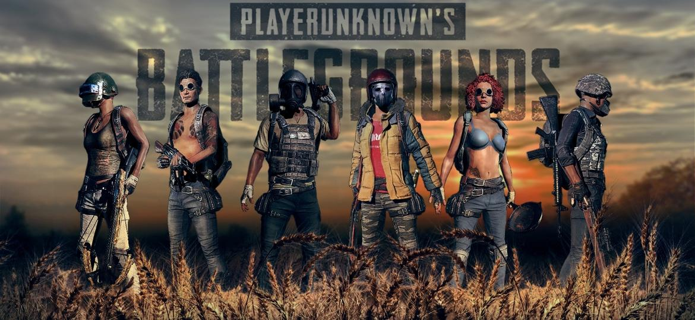

NÃO APENAS UM JOGO, ESTA É BATALHA ROYALE
PLAYERUNKNOWN (Brendan Greene - Diretor criativo em Bluehole ) é o pioneiro do gênero Battle Royale. Desde os começos humildes criando o modo de jogo Battle Royale na série ARMA, ele passou a licenciar seu modo de jogo para a Sony Online Entertainment (agora Daybreak Games) para inclusão em seu título H1Z1. Agora trabalhando como diretor criativo no BATTLEGROUNDS, Ele finalmente conseguiu criar sua própria versão do modo de jogo, que gerou um novo gênero em jogos. "Desde quando comecei a fazer o modo de jogo Battle Royale no ARMA 2, sempre quis fazer um bom jogo. Com Bluehole e sua filosofia de criar jogos "bem feitos" Estou confiante de que juntos podemos criar um ótimo jogo ". PLAYERUNKNOWN
É preciso ter uma conta Steam para poder acessar todos os recursos do jogo.
Registre-se na Steam!
Jogue em servidores no mundo todo! Partidas solo, em dupla e em esquadrão! Então corra e se arme até os dentes! pois os inimigos estão te esperando!!!